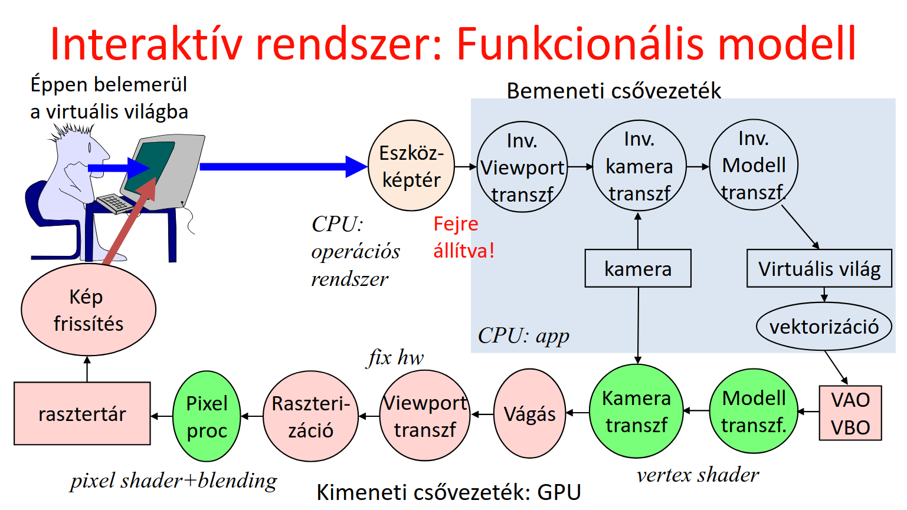
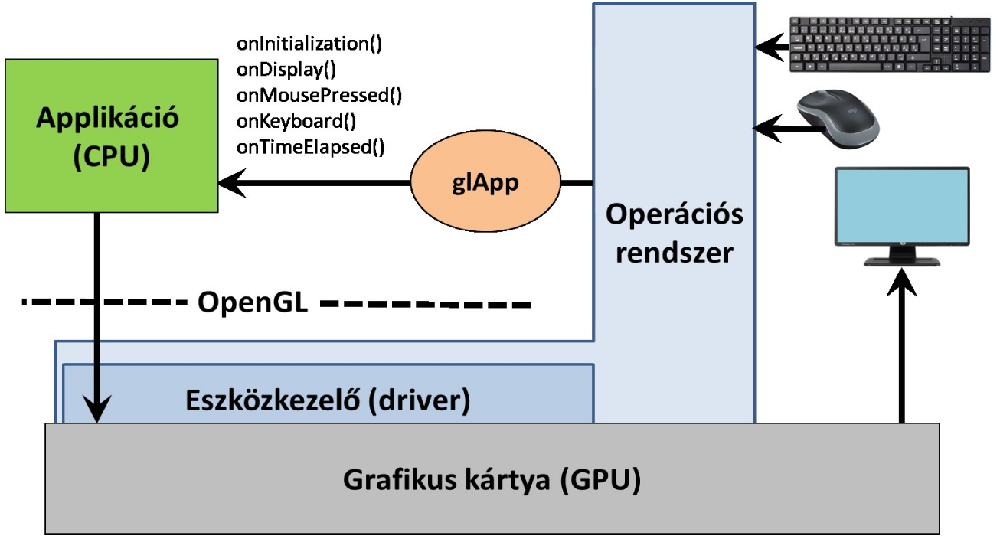
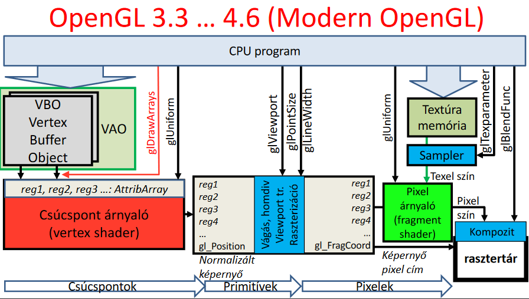
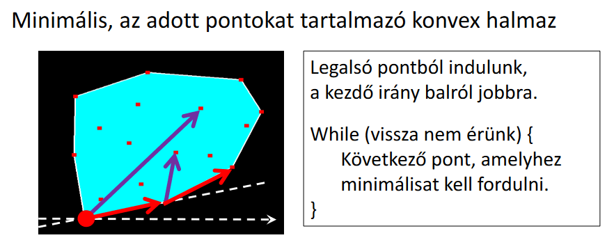
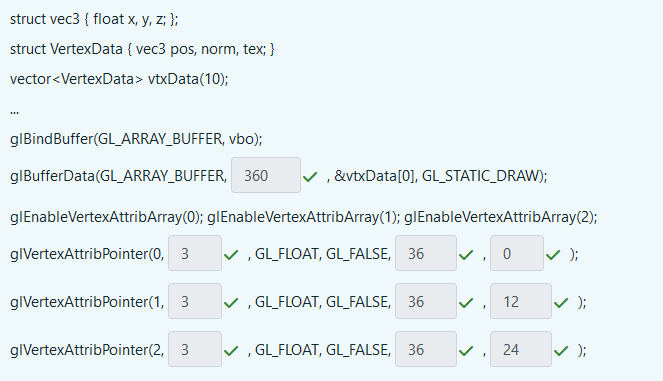

Grafikus hardver és szoftver
Funkcionális modell
A felhasználónak mutatunk egy virtuális világot, amit tud módosítani, és ezeket a módosításokat látja is. Az alábbi grafikus csővezetékrendszer mutatja ezt be:

A CPU-ra megírt program (amit mi írunk pl. C++-ban) az a bemeneti csővezetéket irányítja. A GPU műveletei közül ami pirossal van jelölve, azokhoz "fix hardware implementáció" tartozik, azaz mi nem tudunk bele nyúlni. A zölddel jelölt műveletekre viszont nekünk is hatásunk lehet, úgynevezett vertex és pixel shader-ek írásával.
A GPU csak pontokat, szakaszokat, és háromszögeket tud elfogadni. Minden ezekkel van közelítve, csak aprólékosan. A vektorizáció folyamán tetszőleges görbéket hozunk létre ezekből.
Szoftver architektúra

Az eseménykezeléshez glutot használunk, a lényeg, hogy a main-ben regisztrálunk event handlereket (pl. onDisplay) és az operációs rendszer eseményeire a glut callback-ként hívja a mi függvényünket. Eseményvezérelt programozás lesz.
OpenGL

Elemezzük a pipelinet:
- VBO (vertex buffer object): ebben tárolunk pontokat és a hozzá tartozó alakzatokat
- VAO (vertex array object): ebben több VBO-t tárolhatunk, a műveletek (transzformációk, vágás) ezen történnek.
Felmerülhet a kérdés, hogy hogyan éri meg a VBO-kat tárolni a VAO-ban? Több megközelítés lehet: csinálhatjuk például azt, hogy az egyik VBO csak a pontok koordinátáit tárolja el, a másik csak a pontok színeit, stb. Ezeket utána külön AttribArray-ekbe töltjük fel. Könnyebben kezelhető, hiszen a különböző féle adatok el vannak különítve, de nem túl hatékony. Egy másik lehetőség, hogy egy darab VBO van, és minden pont minden tulajdonsága ebben van. Nehezebb kezelni, hiszen vegyesen vannak az adatok, több programozási energiabefektetést igényel, viszont hatékonyabb.
Bővebben a VBO/VAO-ról...
A glDrawArrays függvény juttatja el ezeket a VBO/VAO-kat a GPU-hoz. Ezek floating point regiszterekbe kerülnek. A vertex shader meghatározza a normalizált eszközkoordinátarendszert (\((-1, -1)\) és \((1, 1)\) között). Ezután a gl_Position tárolja a normalizált eszközkoordinátákat, az itt lévő regiszterek pedig például színértéket tárolhatnak.
A
gl_Position-ben tárolt értékek mindig 4 dimenziósak lesznek és a 3D-s projektív geometriai szabályok szerint lesznek értelmezve.
Ezt követően fix műveleti egységek mennek végbe (vágás, raszterizáció, stb.). Ezek optimalizált hardware műveletek.
- Vágás: kidobjuk ami "nem látszik".
- Viewport transzformáció: A normalizált eszközkoordinátákból a képernyő koordinátarendszerévé (\((0, 0)\) és pl. \((600, 800)\) között) való transzformálás.
- Raszterizáció: Egy adott sokszög csúcspontjai ismeretében meghatározza az összes olyan pixelt ami benne van a sokszögben, interpolálja a regiszter értékeket (pl. szín).
Ezeket követően már konkrét pixelekkel dolgozik a GPU. A fragment shader a pixelek tényleges színét határozza meg. Végezetül kompozitálás után a pixelek bekerülnek a rasztertárba, ahonnan már egyenesen a képernyőre kerülnek. A kompozitálás azért fontos, hiszen itt dől el, hogy melyik pixelek lennének más pixelek "mögött", az átlátszóság kezeléséhez kiemelten fontos.
Primitívek
Tételezzük fel, hogy tetszőleges pontunk a VAO-ban (legyenek ezek \(x_i\)-vel jelölve, ahol $i \in \mathbb{N} $). A gl_DrawArrays hogyan fogja őket értelmezni? Tekintsük először a függvény paramétereit:
glDrawArrays(primitiveType, startIdx, numOfElements);
A startIdx és numOfElements magáért beszélnek, viszont a primitiveType-ról részletesebben szót kell ejteni. Ez a jegyzet 7 darab ilyen primitívet tárgyal, ezek pedig:
- GL_POINTS: külön pontokként jeleníti meg a VAO pontjait
- GL_LINES: kettessével összeköti a megadott pontokat, így például az alábbi szakaszok jönnének létre: \((x_0, x_1), (x_2, x_3), ...\)
- GL_LINE_STRIP: az adott pontot mindig a következő ponttal köti össze: \((x_0, x_1), (x_1, x_2), (x_2, x_3), ...\)
- GL_LINE_LOOP: ugyan az mint a GL_LINE_STRIP, csak a legutolsó pontot a legelsővel köti össze
- GL_TRIANGLES: minden 3 egymás utáni pont egy háromszög: \((x_0, x_1, x_2), (x_3, x_4, x_5), ...\)
- GL_TRIANGLE_STRIP: az utolsó pontot veszi hozzá az előző kettőhöz: \((x_0, x_1, x_2), (x_1, x_2, x_3), (x_2, x_3, x_4) ...\)
- GL_TRIANGLE_FAN: az első ponthoz veszi a legutóbbi kettőt: \((x_0, x_1, x_2), (x_0, x_3, x_4), (x_0, x_5, x_6) ...\)
Állapotgép jelleg
Az OpenGL egy állapotgép, azaz nem kell mindig minden függvénynek megadni minden paramétert, hanem ezeket "globálisan" beállítjuk, utána pedig a függvények ezekkel dolgoznak (Például nem kell a pontok méretét megadni a glDrawArrays-ben, hanem a glPointSize függvénnyel beállítjuk ezt az értéket, utána pedig erre hivatkozik minden függvény.).
Példa programok
A hivatalos ppt-kben található pár példa program, amelyeken keresztül láthatjuk az imént tárgyaltakat kódban is.
Input kezelése
Az operációs rendszernél a koordináta rendszer origója a bal felső sarokban található, az \(y\) tengely fejjel lefelé van! A glViewport viszont a bal alsó sarkot tekinti origónak, tehát valahogy így néz ki a dolog:

Tehát ha a normalizált eszközkoordinátákat szeretnénk megmondani az ablak koordinátái alapján akkor: $$ \begin{align*} x_{\text{ndc}} &= \bigg(\frac{x − x_{\text{offset}}}{\text{viewWidth}}\bigg) \times 2 − 1 \newline y_{\text{ndc}} &= \bigg(\frac{y_{\text{OpenGL}} − y_{\text{offset}}}{\text{viewHeight}}\bigg) \times 2 - 1 \end{align*} $$
ahol \(y_{\text{OpenGL}}\) már az OpenGL szerint értelmezett koordináta! Azaz ha az ablakunk például \(1000 \times 1000\) és az onMouse eseménykezelő szerint az egér \(y\) koordinátája \(267\), akkor \(y_{\text{OpenGL}} = 1000 - 267 - 1\).
Adatok feldolgozása
glEnableVertexAttribArray(0); // engedélyezi az írást ezekbe a regiszterekbe
// beállítja a regiszter tulajdonságait
glVertexAttribPointer(0, 3, GL_FLOAT, GL_FALSE, 0, NULL);
// Paraméterek: id, hány darab számot tárol, milyen típusú, isFixedPoint,
// stride, offset
// adatok feltöltése
glBufferData(GL_ARRAY_BUFFER, size_in_bytes, &startOfArray[0], GL_STATIC_DRAW);
// a mód lehet dinamikus is attól függően állítjuk, hogy gyakran cserélődik-e
// az adat
- Uniform változók: olyan változók, amik állíthatók a shader programban. Nem a pontok adatai közé tartoznak (pl. az MVP)
- Mi a megvalósításnál dupla bufferelést használtunk (a háttér buffert rajzoljuk, a előteret mutatjuk a usernek és ezt a kettőt cserélgetjük). Ezt a
glutSwapBuffers();függvényhívással értük el.
Konvex burok (érdekesség)
Ezen a programon lett bemutatva az OpenGL használata  (ez nem az optimális algoritmus, de egészen használható)
Kvíz
1. Hány háromszöget próbál kirajzoltatni az alábbi programsor?
glDrawArrays(GL_TRIANGLE_FAN, 5, 7);
Megoldás
Öt darabot (Első három pont alkot egy háromszöget, utána minden maradék pont egy újabb háromszöget eredményez.).
glDrawArrays(MODE, start, count) \(\Rightarrow\) az 5-ös rész csak azt jelenti, hogy az 5. től kezdve szeretnénk kirajzolni 7 pontnyit.
A GL_TRIANGLE_FAN az első 2 pontból még nem tud háromszöget rajzolni, úgyhogy csak a 3.-tól kezdve, viszont akkor minden új ponttal rajzol egy darab háromszöget
Vagyis 7-2 = 5 darabot tud rajzolni
{kind=link}
2. Az onMouse eseménykezelő egy eseményt kapott, amelyben az átadott koordináták \((916, 54)\) volt. Mi ennek a pontnak a normalizált eszközkoordinátarendszerbeli \(y\) koordinátája, ha az alkalmazásablak felbontása \(1000 \times 1000\) az utolsó nézeti beállítás pedig a glViewport(100, 200, 800, 700) volt.
Kis segítség: glViewport(x, y, width, height), és a bal alsó sarokból veszi az offsetet, az egér viszont bal felülről számol.
Megoldás
1. Az egér koordinátáinak átalakítása OpenGL ablakkordinátákká:
Az ablak felbontása \(1000 \times 1000\), ahol az egér \(y\) koordinátája \(54\) (az ablak felső sarkából számítva). OpenGL-ben az \(y\) koordináta az ablak alsó sarkából indul, így az átváltás: $$ y_{\text{OpenGL}} = 1000 - 54 - 1 = 945$$
2. Normalizált koordináták számítása:
A fenti képletbe helyettesítve: $$ y_{\text{ndc}} = \bigg(\frac{945 - 200}{700}\bigg) \times 2 - 1 \approx 1.1286 $$
3. Egészítsük ki egész számokkal az alábbi programot úgy, hogy a 10 elemű vtxData tömb teljes egészébe a VBO-ba másolódjon.
A pos adattag a csúcspont árnyaló 0. regiszterébe, a norm adattag az 1. regiszterébe, a tex adattag a 2. regiszterébe.

Magyarázat
Az elején a struktúrát megnézzük, akkor látjuk, hogy:
1 db vec3 az 3 float-ból
1 db VertexData az 3 vec3-ból áll
A 360 azért annyi, mert byte-okban kell megadni és egy float az 4 byte, vagyis \(4 \cdot 3 \cdot 3 \cdot 10\) byte lesz feltöltve
A 3 azért annyi, mert egy vec3 valójában 3 floatból áll, a 36 az a VertexData mérete, az offset pedig szintén byte-ban az adat pozíciójának offset-je
4. Mik igazak a gl_Position regiszterre?
Ha 3D euklideszi geometriában dolgozik a vertex shader, akkor ide a Descartes koordinátákat kell írni kiegészítve a \(w=1\)-gyel
Az ebbe pakolt pont koordinátáit a GPU a 3D projektív geometria szabályai szerint értelmezi, azzal a megkötéssel, hogy a nemnegatív \(w\) koordinátájú pontokat tartja meg csak a vágás.
Megoldás
Első állítás: magyarázat picit korábban volt, de a lényeg annyi, hogy perspektív térábrázolásra van kitalálva a GPU, ezért érdemes úgy használni \(\Rightarrow\) gl_Position = (vp.x, vp.y, vp.z, 1))
Második állítás: ezt csak későbbi előadáson részleteztük, de érdemes megjegyezni, hogy ami nem látszik az le lesz vágva.
5. Az alábbiak közül melyik OpenGL programokkal befolyásolhatjuk a pixel shader program működését?
Megoldás
A glUniform - ez volt az egyetlen felsorolva, amire igaz volt, a többi az vagy független pl. viewport vagy már fragment shading.
6. Válasszuk ki az igaz állításokat. Feltételezzük, hogy a GPU háromszögeket dolgoz fel és a glDrawArrays(GL_TRIANGLES, 0, 30) OpenGL hívás hatására.
Megoldás
Egy helyes válasz volt: - Lehet olyan csúcspontárnyalót írni, amely esetén a GPU nem rajzol ki semmit a vbo tartalmától függetlenül
/* magyarázat: */ void main() { gl_Position = vec4(0, 0, 0, 0); }
- A GPU csúcspont árnyaló programjában ki tudjuk számítani egy háromszög súlypontját.
Nem tudjuk, egyszerre mindig csak egy csúcsponttal foglalkozunk egy számítási egységen.
- A csúcspontárnyaló dönthet arról, hogy a pontokat a háromszög csúcspontjaiként vagy háromszög legyezőként (GL_TRIANGLE_FAN) értelmezze.
Nem, ezt mi állítjuk be. Az OpenGL állapotgép
- Ha a háromszög súlypontját a pixel árnyalóban számoljuk ki, akkor azt elég egyetlen pixelre, és az eredményt át lehet adni a többi pixel árnyalójának.
(... no comment)
- A vágás során a primitív típusa (GL_TRIANGLES) lényegtelen.
Nem lényegtelen, mert ettől függ mit rajzolunk ki, és különböző alakzatokat különböző módon kell vágni
- A GPU pixel árnyaló programja eldönti, hogy melyik pixelt színezze ki a kért színre.
"ElDöNTi" - nem, majd én döntöm el. Az OpenGL egy állapotgép
7. Válassza ki a helyes állításokat az OpenGL körrajzoló képességével kapcsolatban.
Megoldás
- Az OpenGL nem tud kört rajzolni, mert projektív geometriában nincs távolság, ezért nincs kör sem, helyette kúpszeletek lehetnek, azok viszont túl bonyolultak lennének a vágás és raszterizáció hw. implementációjához.
- Az OpenGL nem tud kört rajzolni, mert a művelet felesleges, hiszen a kör közelíthető szabályos sokszöggel.
8. Jelöljük be az alábbi programra vonatkozó igaz állításokat:
#include <windows.h>
#include <GL/glew.h>
#include <GL/freeglut.h>
void onDisplay(), onInitialization();
int main(int argc, char * argv[]) {
glutInit(&argc, argv);
glutInitContextVersion(3, 3);
glutInitWindowSize(600, 600);
glutInitWindowPosition(100, 100);
glutInitDisplayMode(GLUT_RGBA|GLUT_DOUBLE);
glutCreateWindow(“Hi Graphics");
glewExperimental = true;
glewInit();
glViewport(0, 0, 600, 600);
onInitialization();
glutDisplayFunc(onDisplay);
glutMainLoop();
return 1;
}
Megoldás
- Csak Microsoft Windows operációs rendszer alatt fordul le. (Hiszen
#include <windows.h>) - A rajzolás célterülete a teljes alkalmazó ablak. (Hiszen a viewportot teljesen kitöltjük, nincs offset)
- Egy pixelt 64 biten fog a hardver tárolni a rasztertárban. (Hiszen
glutInitDisplayMode(GLUT_RGBA|GLUT_DOUBLE);emiatt - 2 buffer, 4 channel, 8 bit / szín \(\Rightarrow 2 \cdot 4 \cdot 8 = 64\))* - Egyetlen sor törlésével a program Unix alatt is fordíthatóvá válik. (A kérdéses sor a
#include <windows.h>) - Ha Visual Studiót használunk, akkor semmit sem kell installálni és a Web-ről letölteni, hogy leforduljon.
- A nézeti téglalap \(100 \times 100\) pixelből áll.
- A
glutCreateWindowután hívhatunk OpenGL függvényeket. (nem, csak akkor hívhatóak, ha inicializáltuk az OpenGL-t, ami azonInitialization-ban történik a framework-ben) - Hibás, hogy az
opengl.hnincs beinklúdolva. (nem hibás, mert ezért van nekünk a glew könyvtár - ez segít eldönteni, hogy az OpenGL melyik verzióját vagyunk képesek használni) - Ez OpenGL 3.0-ás verzióra készül fel. (nem, a glew eldönti)
- Ez OpenGL 1.0-ás verzióra készül fel. (nem, a glew eldönti)
9. Az alábbi program szándéka szerint egy zöld háromszöget rajzolna ki \(\varphi\) radiánnal elforgatva, de nem működik. Mely sorokban van hiba?
void onDisplay( ) {
glClearColor(0, 0, 0, 0); glClear(GL_COLOR_BUFFER_BIT);
int location = glGetUniformLocation(shaderProgram, "color");
glUniform3f(location, vec3(0.0f, 1.0f, 0.0f));
float MVPtransf[4][4] = {
cos(phi), sin(phi), 0, 0,
-sin(phi), cos(phi), 0, 0,
0, 0, 0, 0,
0, 0, 0, 1
};
location = glGetUniformLocation(shaderProgram, "MVP");
glUniformMatrix4fv(location, 1, GL_FALSE, &MVPtransf[0][0]);
glBindVertexArray(vao);
glDrawArrays(GL_TRIANGLES, 1, 3 );
glutSwapBuffers( );
}
Megoldás
-
glUniform3f(location, vec3(0.0f, 1.0f, 0.0f)); // hiba: 3 float változót vár paraméternek -
glUniformMatrix4fv(location, 1, GL_FALSE, &MVPtransf[0][0]); // hiba: 1 dimenziós array-t vár az utolsó paraméternek -
glDrawArrays(GL_TRIANGLES, 1, 3 ); // hiba: nem 1 darab háromszöget, hanem 3 darabot akar kirajzolni
10. Mely könyvtárak szükségesek feltétlenül, azaz nem csupán opcionálisak, az GPU OpenGL könyvtáron keresztüli programozásához?
Megoldás
OpenGL (nincs további helyes opció)
11. Hány csúcspontot fog tartalmazni az alábbi VBO?
unsigned int vbo;
glGenBuffers(1, &vbo);
glBindBuffer(GL_ARRAY_BUFFER, vbo);
double vertices[] = {1,2,3,4,5,6,7,8};
glBufferData(GL_ARRAY_BUFFER, sizeof(vertices), vertices, GL_STATIC_DRAW);
glEnableVertexAttribArray(0); // AttribArray 0
glVertexAttribPointer(0, 1, GL_FLOAT, GL_FALSE, 0, NULL);
Megoldás
16, mert nagyon trükkösen double arraybe lettek pakolva a pontok, de float-ként lesznek feltöltve. Mivel a double kétszer annyi helyet használ fel, mint a float, ezért 16 float-nyi helyet fognak elfoglalni.